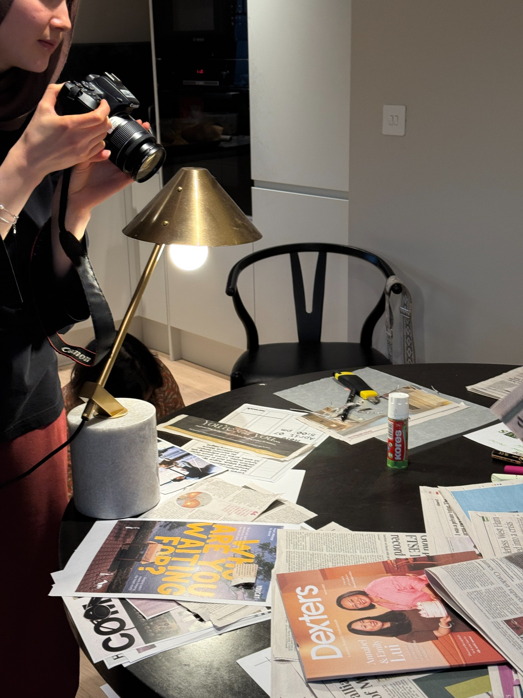
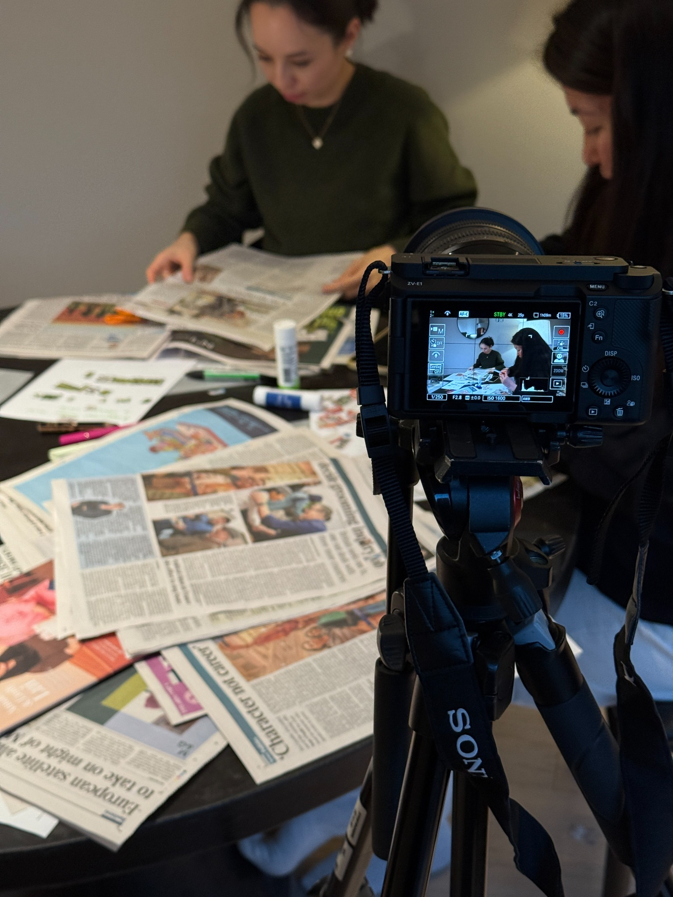
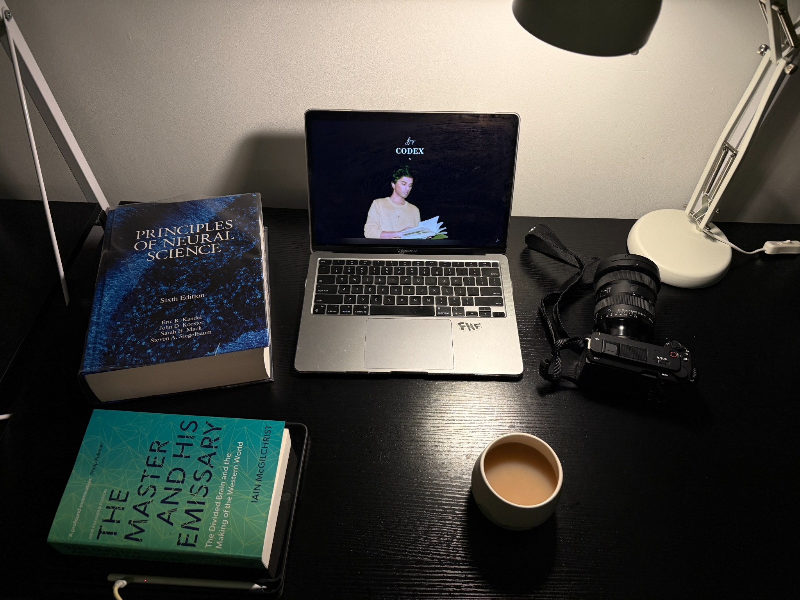
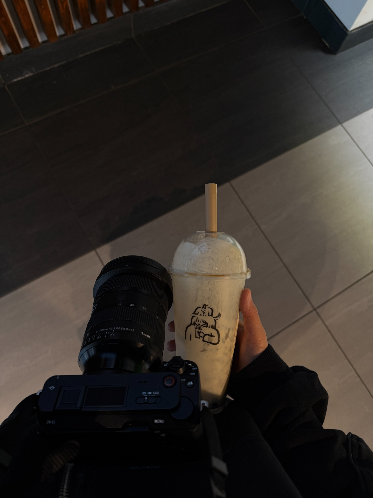

about me
Drawn to stories where culture, memory, and human emotion meet.
I'm Zhannah, a filmmaker and creative travel storyteller. I'm drawn to documentary-style stories — especially the quiet places where memory, culture, belonging, and human psychology meet.
My parents are ethnic Kazakhs who grew up in China before returning to Kazakhstan, so questions of home, culture, and belonging have always felt close to me. That background quietly shapes the way I notice people, places, and what they carry with them.
My studies in sociology and psychology shape the way I film. Sociology taught me to notice culture and the stories people inherit. Psychology is teaching me to look closer at emotion, memory, and the inner worlds behind what we see.

selected work
Community first, then travel, portraits, and the early pieces that shaped my eye.
Some pieces are earlier works. I include them not because they are perfect, but because they show my progress, vision, personality, and the beginning of my documentary/community instinct.
archive / 2024–25
The beginning of how I started seeing stories.
These social media works are part of my foundation. They helped me understand that I keep returning to the same things: community, culture, motherhood, migration, memory, and the emotional details people might otherwise walk past.
tools & process
Professional kit, but the story comes first.
I use professional gear because I care about image, movement, light, and sound. But whenever I catch an opportunity, I'll also shoot on my phone — because I genuinely love filming, and I don't want a real moment to disappear while I'm waiting for the "perfect" setup.
There is always room for growth, and that excites me. I'm ready to take on challenges that help me hone my skills in filmmaking, education, psychology, and documentary-style storytelling.
- Sony ZV-E1
- Sigma 24–70mm
- Tamron 20mm
- Amaran Ace lights ×2
- Tripod
- Essential filmmaking kit



contact
Have a story, event, trip, or person worth remembering?
Send a note through the form. I'm open to personal cinematic reels, event and travel recaps, short-form social content, and mini documentaries.